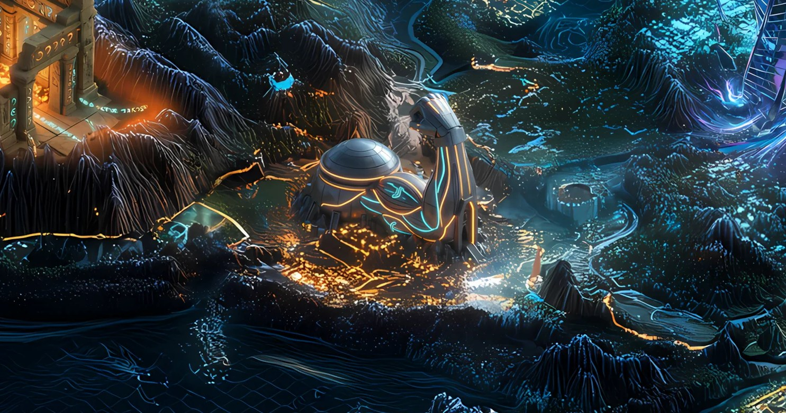

Record // MEME ILLUSTRATED TIMELINE
DIAMONDHANDS FORGE

The people who held through the bear, forged into a cultural totem.
What happened
GIGA is a Solana community meme launched in 2024, honoring Ernest Khalimov, the model behind the internet 'Gigachad' figure (from Krista Sudmalis's Sleek'n'Tears project). It runs as a community-organized project with a companion Giga Fitness brand, and drew public endorsements from Khalimov, bodybuilder Mike O'Hearn, and UFC fighter Paulo Costa. Over 2024 it grew into a cultural rallying point for the 'Chad' archetype of conviction and endurance.
Why Solana remembers it
More than a single mascot, GIGA became shorthand for the culture of endurance — the builders and long-term community members who weathered the bear market — turning a stoic internet meme into a symbol of staying the course.
On the map
A windswept forge on the ridge where those who outlasted the long winter still keep the embers lit.
Evidence · sources last verified 2026-07
Historical reference only. A culture/endurance landmark, not investment advice.